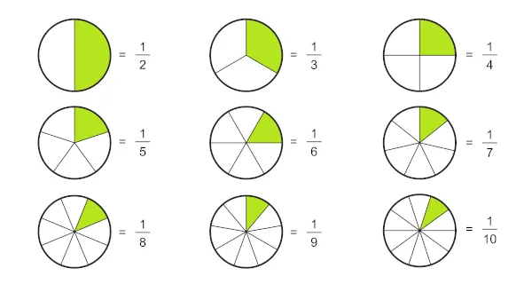
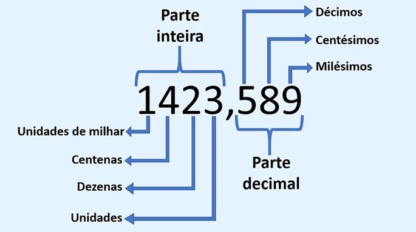
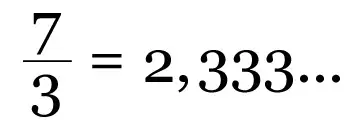

Bem vindo ao HelpMath²!
IREMOS ABORDAR:
Por que estamos fazendo isso?
HelpMath² é um projeto realizado nas aulas de Matemática Avançada (EAMT) na escola Etec Cel. Raphael Brandão.
O projeto foi feito para ajudar pessoas que possuem dificuldades com a matemática basica.
Operações básicas
As operações básicas são a soma, subtração, multiplicação e divisão. É uma das primeiras matérias que aprendemos assim que entramos na escola.
Soma e Subtração
A soma e a subtração é muito usada no dia dia, para fazer os calculos mais básicos.
Pedro têm 6 maçãs, se ele der duas para João, ele terá agora só 4 maçãs.
Dada esta informação, pode se afirmar que, supondo que João não tinha nenhuma maçã, ele tenha duas, ou seja, uma adição, ou soma. Essa conta pode ser representada por: 0 + 2 = 2.
Já Pedro, ao invés de ganhar maçãs, ele as doou, ou seja, uma subtração. Essa conta pode ser representada por: 6 - 2 = 4.
Mário foi a um restaurante, e comprou um prato que custou no total 36,50. Mário pagou a sua divida com uma nota de 50,00 reais, quanto a atendente deve de troco à Mário?
Esta conta é uma conta de subtração, já que, para saber o total do troco, deveremos subtrair a valor pago pelo Mário por sua dívida.
50 - 36,50 = 13,50
Multiplicação e Divisão
A Multiplicação e a divisão também são muito importantes no nosso dia a dia, e pode ser usado em diversas situações.
A multiplicação nada mais é do que somar um certo numero em algumas 'Vezes'. Exemplo: na operação 4 X 3, somariamos o 4 três vezes, ou então, o 3 quatro vezes, que resultaria em 12.
Na multiplicação, a ordem dos fatores não altera o resultado, ou seja, você pode fazer na sequência que quiser. Multiplicar um numero por 1 resulta nele mesmo (4X1 = 4, por exemplo). Multiplicar um numero por zero resultará sempre em zero.
A multiplicação pode ser representada tanto por um X, como por um . (Ponto final).
4X1 = 4 4.0 = 0 5X7 = 35 6.4 = 24
Já divisão é a operação inversa da multiplicação. Ela envolve a distribuição de um número (o dividendo) em partes iguais por outro número (o divisor) para determinar quantas vezes o divisor cabe no dividendo. O resultado da divisão é chamado de quociente. O símbolo usado para representar a divisão é o ÷ ou o /
Enzo tem 12 melancias, se ele as dividir entre seus 4 amigos, quantas melancias cada um terá?
12 ÷ 4 = 4. Resposta: cada um terá quatro pedaços, e isso acontece pois Enzo dividirá numeros iguais entre seus amigos.
Obs: A multiplicação e a divisão precisam ser feitas antes da adição e subtração.
Em resumo, a multiplicação é usada para encontrar o produto de dois ou mais números, enquanto a divisão é usada para distribuir um número em partes iguais ou encontrar quantas vezes um número "cabe" no outro.
Conjuntos numéricos
Conjuntos numéricos são coleções ou agrupamentos de números que compartilham certas propriedades ou características comuns.
São eles: Naturais (N) (Numeros INTEIROS positivos : 1,2,3,4, etc.);
Inteiros (Z) (Numeros inteiros positivos e negativos: -2,-1,0,1,2, etc.)
Racionais (Q) (Todos os numeros que podem ser expressos por uma fração, com numeros inteiros e sem o numero 0: 0.333... (1/3) , 0,05 (5/100), etc.)
Irracionais (I) (Numeros que não podem ser representados como fraçoes simples: √2, π (pi), e (número de Euler), etc.)
Reais (R) (Uma junção dos racionais, naturais, inteiros e irracionais, abrange toda a reta numerica: 0,8 , 0,9 , 1 , 1,1 , etc)
Complexos (C) (è uma expressão que possui um número real e um imáginario que o imaginário corresponde à raiz de um número negativo: z = a(real)+bi(imaginário))
Primos (P) (Numeros maiores que 1 que possuem apenas fois divisores, que são o um e ele mesmo: 2, 3, 5, 7, 11, etc.)
Números e expressões numéricas
"Números e expressões numéricas" são vários conceitos e operações relacionadas a números e símbolos matemáticos.
Pode se usar várias operações, como as operações basicas, que aprendemos anteriormente, Parênteses () Colchete[] e Chave{}, números basicos e expressões numéricas.
Para fazer o Parênteses () Colchete[] e Chave{} é bem simples, primeiro resolva o Parênteses, depois o Colchete, e, então, a chave.
5.{[4+(5-1)].[6+2] + 6}
5.{[4+4] . [6+2] + 6} (Fizemos o Parênteses)
5.{8 . 8 + 6} (Fizemos os Colchetes)
5.{64 + 6} (Multiplicação e divisão primeiro)
5.70 (Fizemos as chaves, sobrando apenas a ultima operação)
350 (Resultado final.)
Para o exemplo 2 + 3 x (4 - 1): Primeiro, resolva o que está dentro dos parênteses: 4 - 1 = 3. A expressão agora se torna "2 + 3 x 3". Em seguida, realize a multiplicação: 3 x 3 = 9. Agora, a expressão se torna "2 + 9". Por fim, some os dois números: 2 + 9 = 11. Portanto, o resultado da expressão é 11.
É importante também falar sobre a regra de sinais.
A regra de sinais em matemática é um conjunto de regras que determinam o sinal resultante de uma operação envolvendo números com sinais positivos (+) e negativos (-).
Adição de números com sinais:
Quando você soma dois números positivos ou dois números negativos, o resultado é positivo . Por exemplo:
3+5=8 3+5=8 e −2+(−4)=−6
Quando você soma um número positivo e um número negativo , o sinal do resultado depende do valor absoluto dos números.
O número com maior valor absoluto determina o sinal. Se o número positivo tiver um valor absoluto maior, o resultado será positivo;
se o número negativo tiver um valor absoluto maior, o resultado será negativo. Por exemplo:
7+(−2)=5 (pois o valor absoluto de 7 é maior) e
−5+3=−2 (pois o valor absoluto de -5 é maior).
Subtração de números com sinais:
A subtração de números com sinais pode ser vista como uma adição de números opostos. Isso significa que a regra para subtração é
essencialmente a mesma que a regra para adição. O primeiro número é mantido com seu sinal original, enquanto o segundo número é
transformado em seu oposto, mudando o sinal, e, em seguida, a adição é realizada. Por exemplo:
8−3=5 e −4−(−2)=−4+2=−2.
Multiplicação de números com sinais:
Quando você multiplica dois números com o mesmo sinal (dois positivos ou dois negativos), o resultado é positivo (+). Por exemplo:
4⋅2=8 e −3⋅(−1)=3.
Quando você multiplica dois números com sinais opostos (um positivo e um negativo), o resultado é negativo (-). Por exemplo:
5⋅(−2)=−10 e −6⋅3=−18.
Divisão de números com sinais:
A divisão de números com o mesmo sinal resulta em um quociente positivo (+). Por exemplo:
8÷2=4 e −10÷(−2)=5.
A divisão de números com sinais opostos resulta em um quociente negativo (-). Por exemplo:
6÷(−3)=−2 e −12÷4=−3.
Frações
Frações são uma forma de representar números que não são inteiros, mas partes de um todo. Elas são usadas para descrever quantidades que não são números inteiros, como partes de um bolo, fatias de pizza, medidas de tempo, porcentagens, entre outros.
Numerador: Numero de cima, que representa quantas partes possui. No caso de uma pizza, por exemplo, seriam 8 partes
Denumerador: Numero de baixo, Representa o numero de partes que foram divididas do todo. No caso de uma pizza, caso eu comer 3 pedaços e Enzo 2, seria 5, que daria a fração 8/5 (Oito quintos.)
Fração própria: A fração em que o numerador é menor que o denominador. Por exemplo, 2/3.
Fração imprópria: A fração em que o numerador é maior ou igual ao denominador. Por exemplo, 5/4.
Fração aparente: Uma fração imprópria onde o numerador é um múltiplo do denominador. Por exemplo, 6/3 (que é igual a 2).
Número misto: Uma combinação de um número inteiro e uma fração própria. Por exemplo, 1 3/4.

Notação científica
A notação científica é uma maneira concisa de escrever números muito grandes ou muito pequenos. É especialmente útil em campos como a física, química, astronomia e biologia, onde as quantidades podem variar drasticamente em escala.
Um número expresso em notação científica é escrito como o produto de dois números: um coeficiente e uma potência de 10. A forma geral é:
a×10
n
Onde:
a é o coeficiente, um número que deve ser maior ou igual a 1 e menor que 10.
n é um número inteiro e representa a potência de 10.
Números muito grandes:
300,000,000
300,000,000 pode ser escrito como 3×10^8. Isso acontece pois têm 8 zeros depois do numero em questão, que é 3.
caso fossem apenas 6 zeros, seria 3x10^6.
Números muito pequenos:
0.00054.
0.00054 pode ser escrito como 5.4×10^−4. Quando possui 2 numeros antes do zero ou depois, se coloca os dois numeros com um ponto, como no exemplo anterior. o -4 acontece porque têm 4 zeros antes do numero em questão.
Fatoração
A fatoração é um processo matemático no qual um numero ou uma expressão é quebrado em fatores ,também chamado de divisores menores que, quando multiplicados juntos, resultam no número original ou na expressão original. Fatoração é uma técnica indispensável da matemática, que ajuda a resolver problemas, simplificar expressões, encontrar os divisores de um numero, entre varias outras coisas. A fatoração é feita por meio do mmc, que nada mais é do que dividir o numero por números primos até finalmente chegar no um.
O exemplo do mmc do numero 60, seria igual à expressão 2² . 3 . 5
60|2......... )
30|2......... (
15|3.......... } Multiplicando os numeros da direita, o resultado será 60
05|5/........ (
01|/60...... )
O numero elevado no "2²" acontece pois temos dois numeros 2 no mmc, o que nos permite elevar o numero por 2, já que 2.2 = 2².
Múltiplos, Divisores, Antecessores e Sucessores
Múltiplos e Divisores
Esses conceitos são bem faceis e simples de se aprender e entender. Multiplos nada mais é do que o numero obtido multiplicando um numero base por um numero inteiro. Por exemplo, os multiplos de 5 são 5, 10, 15, 20... (5.1 = 5, 5.2 = 10, 5.3 = 15, 5.4 = 20...).
Já os divisores são os numeros que, quando divididos por um numero base, resultam em um numero exato, ou seja, sem virgula. Por exemplo: Os divisores de 20 são 1, 2, 4, 5, 10 e 20. Isso acontece porque, com o 3, que não é um dos divisores daria um numero com virgula, que no caso é 6,666666666666667.
Curiosidade: Os numeros primos são definidos pelos divisores, já que numeros primos são os numeros que só podem ser divididos para um numero exato por 1 e por ele mesmo. No exemplo do 7, ele só tem 1 e 7 como divisores, o que faz dele um número primo.
Antecessores e sucessores
É um conceito ainda mais simples que o anterior. O Antecessor de um numero é o numero que vem antes do numero base. Por exemplo, o antecessor de 7 é 6, pois 6 é o numero anterior à 7.
Já o sucessor é o oposto de Antecessor, já que ele pega o numero da frente do numero base. No mesmo exemplo de 7, o seu sucessor é o 8, já que ele vem posteriormente ao numero 7.
Decimais e Dizimas periódicas
Decimais
Decimais nada mais é do que o número após a vírgula. No exemplo 5,25, o 5 é o numero inteiro ou exato, enquanto o 25, que está após a vírgula, é o numero decimal.

Dizimas periódicas
As dizimas periodicas são numeros decimais que possui a caracteristíca de ter numeros infinitos depois do numero inteiro e da vírgula. Por exemplo, o número 2,33333333333333... é uma dizima periódica, já que o numero três é infinito. Eles podem ser representados pela reticênsias (...) ou por um traço em cima dos numeros que se repetem (6̅ ).
Existem dois tipos de dizimas periódica, as Simples e as Compostas.
As simples são definidas por números ou sequências repetidas nesses números após a virgula, que são os decimais. O exemplo acima, por exemplo, é uma dizima periódica simples, já que repete o três. mas as dizimas simples não acontecem só com um numero, elas podem acontecer até com dois ou mais números, como na dizima 33,030303030303...

Já as compostas possuem numeros intrusos, que são números que não pertencem aos numeros decimais que se repetem. Por exemplo, no numero 0,03666666... o 0 e o 3 são os "Intrusos", já que eles não se repetem.
Ao lado está uma dizima periódica composta, e também como achar a sua Fração Geratriz.
Abaixo está um link para um blog, onde o professor explica sobre dizimas periódicas.